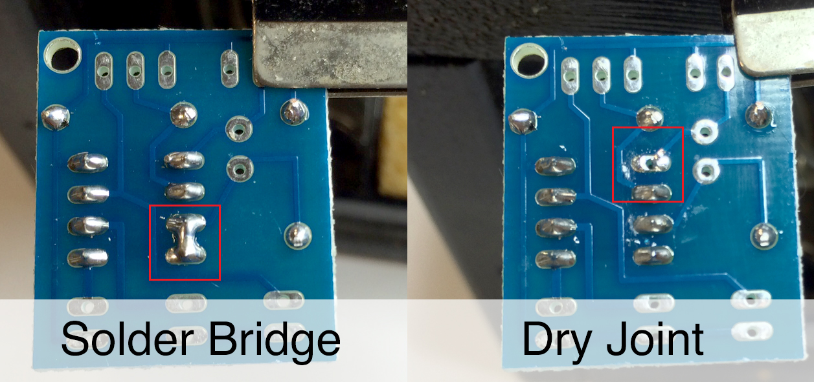
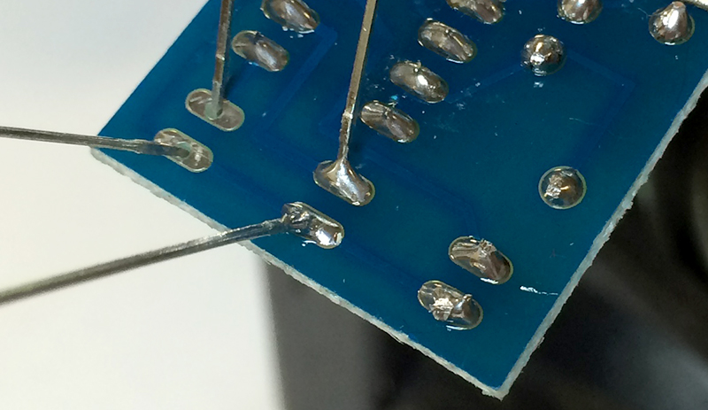
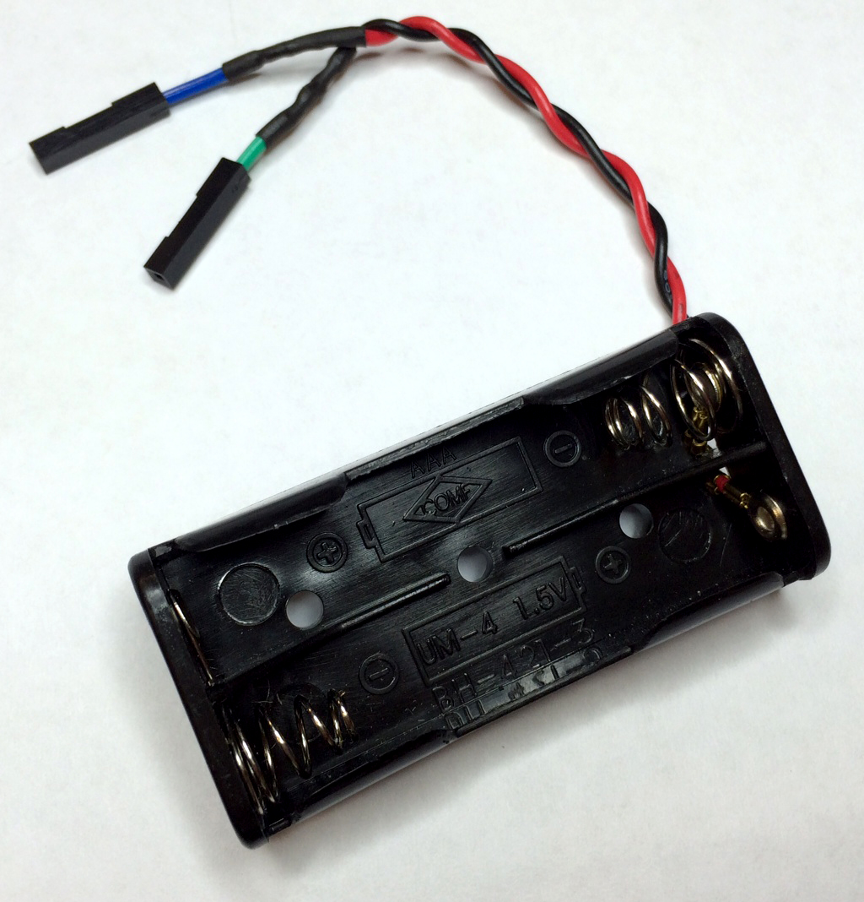

PCB Build
Table of Contents
1 PCB soldering
In the last lesson, you looked at the theory of how the circuit works, and wrote a test program for it.
Build It
- Now, we'll start to build your actual PCB. Start by getting the PIC Programmer PCB, and get the resistors and an 8-pin chip carrier.
- Solder the resistors in, using the correct soldering technique.
- Now look at your chip carrier. You'll notice there's a notch in one side. You'll notice a matching notch on the outline of the chip carrier on the PCB (labelled 'C08'). Solder this into the board the right way up, and take care to ensure none of the solder pads get soldered to one another (called a solder bridge), or leaving a pad so that the drill-hole is still visible (called a dry joint).
- The picture below shows the soldering faults described above.
]]
- With these in place, you can add the other components in any order.
- Remember to make sure to install the LEDs the right way around. You can use either 3mm or 5mm LEDs of any colour. Note that blue LEDs might not work, as they require slightly more voltage.

- Keep using the side cutter to remove the excess wire from the component legs as you go along, to make it easier to work on the board.
- The SIL (Single In-Line) header pins come in strips of about 20 pins. Use a side-cutter to break off 2 and 3 pins, then solder them in carefully.
- The LDR is non-polarised, so can be mounted either way round.
- Try and keep all your components flat to the board, so that they're not sticking up in the air.

- When you're finished, your board should look something like the image above.
- You can now see your teacher for a Genie C08 chip, which you can insert into the chip holder.
- NOTE: Make sure the right way up, by ensuring that the notch in the Genie chip lines up with the notch on the chip carrier.
2 Download socket
Build It
- To program the PIC chip with your flowchart, we need to make up a connector to allow us to plug it into a PCB.
- To do this, we'll need…

- 1x 3.5mm stereo jack (as seen in mp3 player and 'phone headphone sockets),
- 1x 22k resistor, and
- 3x female header plugs (any colours, but ideally all different).
- Using the image below, identify the 0V and Status output pins on the bottom of the socket, and solder one of your female header plugs to each one.
- Next, solder one end of a 22k resistor to the remaining socket (Programming Input), and solder a header plug to the other end.
- Optionally, push the three header pins onto the PCB in the correct order (shown in the picture), and use a small strip of selotape to bond them together for more convenience later on.

3 Power cable
Build It
- We'll need a way to power this circuit. It only needs 3V to operate, which we can take from either 2x AA (or AAA) batteries, or from a desktop DC power supply. We'll need to make sure we can make a clean connection without ny risk of electrical shorting, so we'll use a couple more female headers.
- To make a battery pack connector, you'll need…

- 2 female header plugs, with one end stripped,
- 1x twin AA or AAA battery holder,
- 1x 1" piece of heat-shrink tubing (cut it in half to give two smaller pieces).
- Shorten the wire ends of both the headers and the battery box, and strip all the wire ends.
- then place a piece of heatshrink

4 Assessment Point
Badge It
- Take pictures of the following, for inclusion in your portfolio: PCB (front), PCB (back), Download cable and power cable.
- Upload your photos and then create a text document describing your soldering technique, briefly stating what you feel is good about your work, and identifying something you'd like to improve. Upload the text document.